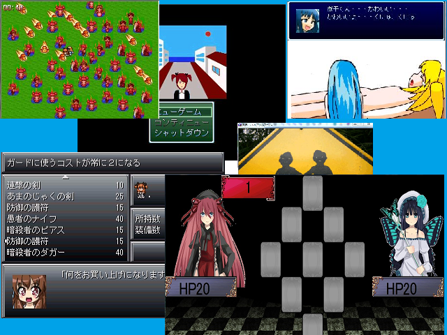

保存資料：2019-03-30の公開ページを再生しています。原HTMLと画像の載荷は保存済みです。
 |
|
| 作者：焼肉 | |
| ツクール：２０００ | |
| ジャンル：バラエティー | |
| 配信/投稿：動画：可 配信：可 | |
| 作者コメント： 収録作品 ・暗殺者やみっち 完全版（RPG？） ・暗殺者やみっちⅡ -守護者煮干-（RPG） ・ちんすこうクエストARC-V ３人の主人公を追加した完全版（アクションゲーム？） ・煮干君のエロゲー（R-18） ・異界-エイプリルフール-（ホラーサウンドノベル） ・もしもピア連続殺人事件（ファミコンレトロ風ADV） ・やみっちがソシャゲ会社の運営を始めたら（ｋｓｇ） ・２人対戦型人狼ゲーム（オリキャラを使った戦略型カードゲーム） ・ウィンディ無双（アクションゲーム） ・やみっちとライチの結婚初夜ウィンディルート（前作の最終話の別ルート） その他９０本収録のksg、ホラー、シリアス、エロゲーとジャンルごっちゃまぜのなんでもアリな 計１００本のゲーム集です |
|
| 管理人コメント： ウィンディ無双が激ムズの予感 |
|
| ダウンロード(0.00MB) / 感想掲示板 | |
| 前の作品 / 次の作品 / TOPへ戻る | |